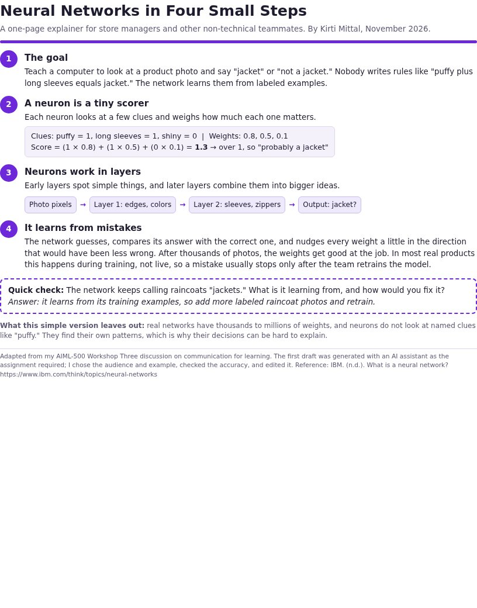

Neural Networks in Four Small Steps: An Explainer for Non-Technical Teams
As AI features reach more products, the people who manage them, such as store managers, support leads, and merchandisers, are expected to understand them. Most explanations of neural networks are written for engineers. My first two artifacts showed that I can build and test an AI tool and choose the right approach. This one shows a third skill: explaining AI clearly to people who will use it but never build it.
A downloadable one-page explainer (PDF) that teaches how a neural network works in four steps:
- The goal: recognizing a jacket in a product photo.
- A neuron: a tiny scorer, shown with a worked example using small numbers.
- Layers: a simple diagram from pixels to "jacket?"
- Learning: guessing, comparing, and adjusting weights, including the fact that most models improve only when retrained.
It ends with a quick-check question and a short note on what the simple version leaves out.

- Help a non-technical reader understand neural networks in a few minutes, without math beyond one multiplication.
- Set realistic expectations, especially that models learn from examples and usually change only when retrained.
- Practice the communication-for-learning strategies from the course.
- Started from a course challenge. In Workshop Three, the task was to create the simplest accurate explanation of neural networks with a generative AI tool, using the lesson's communication strategies.
- Refined the prompt three times. The first answer was correct but full of jargon. I then named the audience (a store manager) and asked for short steps and one retail example, and finally asked for a small diagram, a worked example, and a quiz question.
- Checked and edited for accuracy. I kept the idea that a network learns by adjusting weights, and added a line that most real models improve only when the team retrains them, so readers do not expect instant learning.
- Applied course feedback. In the discussion, classmates and I pointed out the value of a visual and a check question, so both are in the final version.
- Designed it as one page so it can be printed or shared in a meeting.
Communication strategies used
| Strategy from the lesson | Where it appears |
|---|---|
| Chunking | Four short numbered steps |
| Progressive disclosure | Goal first, learning last |
| Visual aid | The pixels-to-output layer diagram |
| Real-world example | A jacket in a product photo |
| Interactive learning | The quick-check question |
| Relevance | Written for retail teammates, not engineers |
- A generative AI assistant for the first drafts, as the assignment required (disclosed in the guide)
- Course lesson on communication for learning, and IBM's overview of neural networks for accuracy
- HTML and CSS to design the one-page PDF
- GitHub Pages to host this portfolio
This artifact shows that I can turn a technical AI concept into something a non-technical team can understand and act on. That skill matters in AI projects, because people trust and use a tool better when they understand what it can and cannot do.
Many simple explanations stop at a friendly analogy. This one adds a worked example with real numbers, a visual, a quiz, and an honest "what this leaves out" note, so it is simple without being misleading. It also uses a retail example from my own e-commerce background.
As companies add AI to customer-facing products, the people around those products need a shared, accurate picture of how they work. Clear explanations reduce fear and unrealistic expectations, which are two common reasons AI projects struggle after launch.
IBM. (n.d.). What is a neural network? IBM Think. https://www.ibm.com/think/topics/neural-networks
Mayer, R. E. (2009). Multimedia learning (2nd ed.). Cambridge University Press.